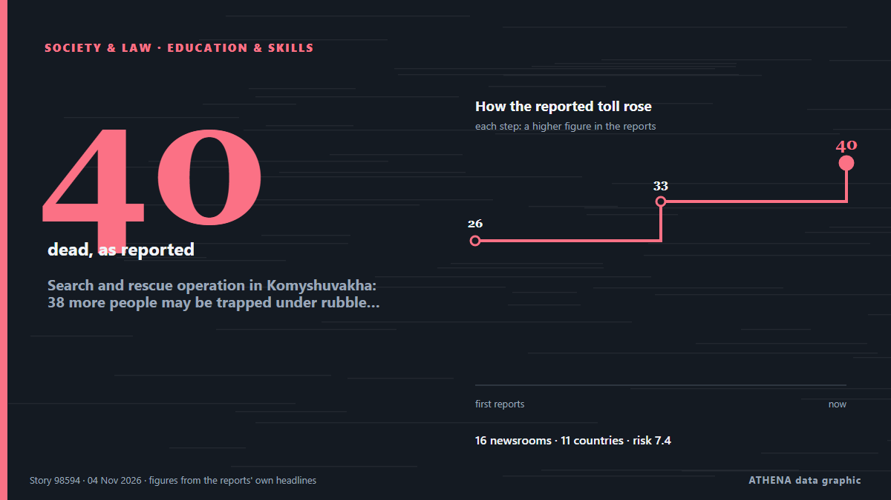

Search and rescue operation in Komyshuvakha: 38 more people may be trapped under rubble, 59 remain missing

The bodies of 31 people killed in a Russian airstrike have been recovered from the rubble in Komyshuvakha, Zaporizhzhia region. από Ukrinform (English)
Αναφέρθηκε ανεξάρτητα από 16 μέσα σε 11 χώρες από τις 2 Νοε, πρώτο το Ukrainska Pravda (English)· η κάλυψη κορυφώνεται. Το ATHENA εκτιμά τον κίνδυνο υψηλό (7.4/10), κυρίως λόγω της σοβαρότητάς του και της εμβέλειάς του. Βεβαιότητα 85% (υψηλή): το επιβεβαιώνουν 16 ανεξάρτητα μέσα, μέση αξιοπιστία 77%. Μέσα ανά χώρα: Ουκρανία (21), Ρωσία (3), Τουρκία (2). Κάλυψη: 2 Νοε έως 4 Νοε, 53 ώρες.
Γιατί έχει σημασία: Η πλήρους κλίμακας εισβολή της Ρωσίας στην Ουκρανία ξεκίνησε τον Φεβρουάριο του 2022. Η σελίδα παρακολουθεί τις μάχες, τα πλήγματα σε υποδομές και τη διπλωματία γύρω από τον πόλεμο, όπως τα καλύπτουν μέσα από όλο τον κόσμο.
Τι άλλαξε: 12 νέες αναφορές από 7 μέσα στο 24ωρο έως 4 Νοε.
Πρώτη διατύπωση: Two injured in Russian FPV drone attack on Zaporizhzhia
Οι τίτλοι των ειδήσεων παρουσιάζονται στα αγγλικά, όπως δημοσιεύτηκαν.
Με μια ματιά
Επιλέγεται, βαθμολογείται και γράφεται από τη δημοσιευμένη μεθοδολογία του ATHENA. Κανένας συντάκτης δεν παρεμβαίνει σε μεμονωμένα γεγονότα. Πώς παράγεται ›
| 02 Nov 08:27 UTC | 2 |
|---|---|
| 02 Nov 10:27 UTC | 0 |
| 02 Nov 12:27 UTC | 0 |
| 02 Nov 14:27 UTC | 0 |
| 02 Nov 16:27 UTC | 7 |
| 02 Nov 18:27 UTC | 4 |
| 02 Nov 20:27 UTC | 3 |
| 02 Nov 22:27 UTC | 1 |
| 03 Nov 00:27 UTC | 0 |
| 03 Nov 02:27 UTC | 0 |
| 03 Nov 04:27 UTC | 1 |
| 03 Nov 06:27 UTC | 1 |
| 03 Nov 08:27 UTC | 5 |
| 03 Nov 10:27 UTC | 1 |
| 03 Nov 12:27 UTC | 3 |
| 03 Nov 14:27 UTC | 1 |
| 03 Nov 16:27 UTC | 1 |
| 03 Nov 18:27 UTC | 1 |
| 03 Nov 20:27 UTC | 0 |
| 03 Nov 22:27 UTC | 1 |
| 04 Nov 00:27 UTC | 0 |
| 04 Nov 02:27 UTC | 0 |
| 04 Nov 04:27 UTC | 0 |
| 04 Nov 06:27 UTC | 1 |
| 04 Nov 08:27 UTC | 1 |
| 04 Nov 10:27 UTC | 3 |
| 04 Nov 12:27 UTC | 1 |
| 02 Nov 08:45 UTC | 4.2 |
|---|---|
| 02 Nov 11:19 UTC | 4.9 |
| 02 Nov 18:44 UTC | 6.9 |
| 02 Nov 21:44 UTC | 7.0 |
| 03 Nov 14:17 UTC | 7.5 |
| 03 Nov 17:30 UTC | 6.9 |
| 04 Nov 13:32 UTC | 7.4 |
Γιατί αυτοί οι αριθμοί
Σημασία
Κίνδυνος
Βεβαιότητα
Η κάλυψη — ποιος το ανέφερε και πότε
ο τίτλος όπως δημοσιεύτηκε · ανοίγει το πρωτότυπο- Ukrainska Pravda (English) · ΟυκρανίαTwo injured in Russian FPV drone attack on Zaporizhzhia
- Ukrainska Pravda (English) · ΟυκρανίαOne killed and two injured in Russian attack on Komyshuvakha
- Ukrainska Pravda (English) · ΟυκρανίαTwenty-six killed in Russian aerial bomb attack on school used to distribute humanitarian aid in Zaporizhzhia Oblast – photos, video
- Anadolu Agency (English) · ΤουρκίαDeath toll from Russian airstrikes on Ukraine's Zaporizhzhia region rises to 24: Authorities
- The Straits Times · ΣιγκαπούρηUkraine says Russian strikes dash peace progress hopes after 26 killed
- Meduza (English) · ΡωσίαZelensky says Russian airstrikes on school used for humanitarian aid in Ukraine’s Zaporizhzhia region killed at least 18 people
- APA (English) · Αζερμπαϊτζάν18 killed in Russian airstrikes on Ukraine's Zaporizhzhia region
- Ukrinform (English) · ΟυκρανίαRussian forces launch massive bomb attacks on Komyshuvakha, killing 18 people
- Kyiv Post · ΟυκρανίαMore Than 50 People May Still Be Trapped Under Rubble After Russian Strike on Aid Site – Zelensky
- Kyiv Independent · Ουκρανία'Exceptionally horrific strike' — Russian bombs hit school used as humanitarian aid center in Zaporizhzhia Oblast, killing 33
- Cyprus Mail · ΚύπροςRussian bombing kills 24 in village in southeastern Ukraine
- Ukrinform (English) · ΟυκρανίαDeath toll from Russian strike on school in Komyshuvakha rises to 24
- Ukrinform (English) · ΟυκρανίαZaporizhzhia region declares Day of Mourning for victims of Komyshuvakha attack
- APA (English) · ΑζερμπαϊτζάνDeath toll from Russian attack on Ukraine's Komyshuvakha rises to 26 - UPDATED
- Ukrinform (English) · ΟυκρανίαDeath toll from Russian strikes on school in Komyshuvakha rises to 24
- Daily Maverick · Νότια ΑφρικήRussian bombing kills 24 in village in southeastern Ukraine, emergency services say
- Xinhua (English) — page reader · ΚίναUkraine says 18 killed, 27 missing in Russian aerial strike
- Ukrainska Pravda (English) · Ουκρανία"The scale of this tragedy is horrifying": 29 killed in Komyshuvakha, 48 people missing
- The Moscow Times · ΡωσίαAt Least 31 Killed in Russian Bomb Attack in Zaporizhzhia
- News of Bahrain · ΜπαχρέινUkraine Says Russian Strikes Shatter Hopes for Peace After 26 Killed
- Ukrainska Pravda (English) · ΟυκρανίαFour police officers and two rescue workers killed by Russia in Komyshuvakha – photos
- Ukrinform (English) · ΟυκρανίαDeath toll from Komyshuvakha airstrike rises to 31, nearly 50 people missing
- ReliefWeb (UN OCHA) · INTUkraine: A Flagrant Attack on 2 November Killed Civilians and First Responders at a Relief Distribution Site in Zaporizhzhia Region [EN/RU/UK]
- Egypt Independent · ΑίγυπτοςAt least 31 dead after Russia drops nine bombs on a Ukrainian school building
- Meduza (English) · ΡωσίαRussia bombs humanitarian aid distribution site in southern Ukraine, killing 31. More than 40 people remain missing.
- Ukrainska Pravda (English) · ΟυκρανίαDeath toll from Russian strike on Komyshuvakha reaches 33, Zelenskyy says
- Ukrainska Pravda (English) · ΟυκρανίαWoman, 22, with 81% burns in critical condition after Komyshuvakha attack
- Ukrainska Pravda (English) · ΟυκρανίαLatvia convenes emergency UN Security Council meeting over Russian attack on Komyshuvakha
- Kyiv Post · ΟυκρανίαLatvia Seeks Emergency UN Security Council Meeting as Komyshuvakha Death Toll Hits 31
- Novinite · ΒουλγαρίαRussian Strikes Kill 29 in Zaporizhzhia, Injure 73 at Kharkiv Hospital
- Ukrinform (English) · ΟυκρανίαSearch and rescue operation in Komyshuvakha: 38 more people may be trapped under rubble, 59 remain missing
- Ukrainska Pravda (English) · ΟυκρανίαDeath toll from Russian strike on Komyshuvakha rises to 37, search and rescue operations continue
- Ukrinform (English) · ΟυκρανίαDeath toll in Komyshuvakha rises to 37 as search operations continue
- Kyiv Post · ΟυκρανίαDeath Toll Rises to 40 After Russian Bombing of Komyshuvakha School
- Kyiv Independent · Ουκρανία'Insane attack' — Death toll from Russian attack on Komyshuvakha rises to 40 as search operation enters 3rd day
- Anadolu Agency (English) · ΤουρκίαUkraine says death toll in Russian attack on aid center in Zaporizhzhia region rises to 37